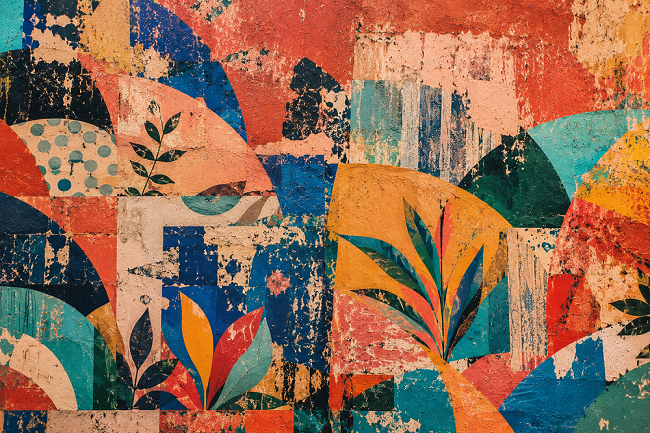
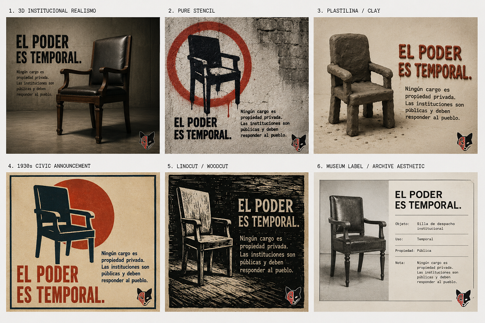

Resistance posters
Home > Resistance posters
Resistance posters
The resistance posters gathered on this page is an open collection of posters to download, print, share, and circulate. These pieces employ short phrases, recognizable symbols, and a shared democratic insistence: public power is not private property, memory does not belong to oblivion, care sustains communal life, and no future should be surrendered without a fight.
The series brings together posters about institutions, citizen oversight, archives, education, health, food, territory, public critique, fear, propaganda, and collective organization. Some speak from the empty chair, the open eye, the small flame, or the archive box; others from the burning school, the library, the communal kitchen, the rift, the root, or the shared table. They all propose the same thing: to return certain words to the public sphere so they can be seen, discussed, and used.
The posters are available for educational, community, cultural, and non-commercial use, provided their visual integrity is preserved and proper credit is given. They are modest, reproducible, and open materials: small graphic artifacts for walls, classrooms, libraries, cultural centers, assemblies, conversations, and other places where public life still breathes.

Series 01 | The Empty Chair
The Empty Chair reminds us that no public office is private property. An institutional chair may be occupied by someone for a time, but it never stops being public: it belongs to the people, demands accountability, and marks the line between governing and owning power.